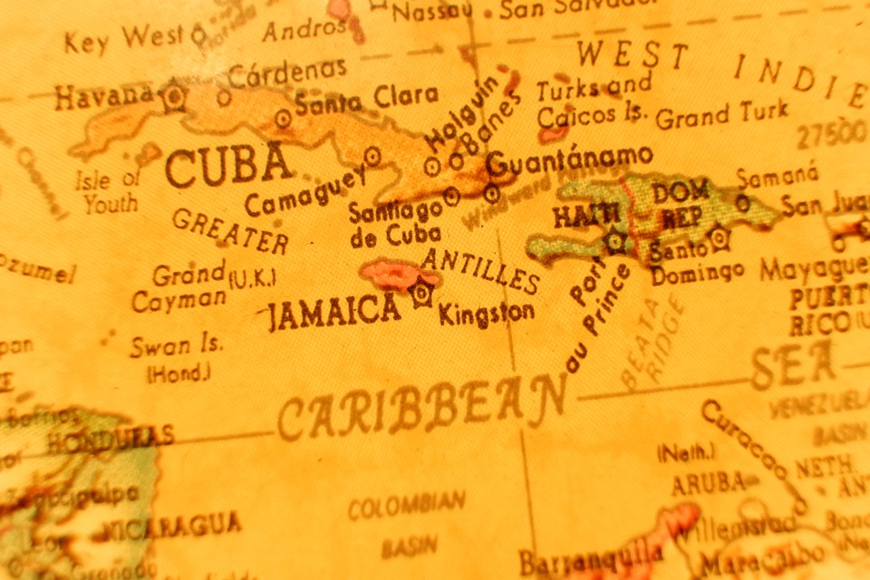

Aber wo genau in der Karibik?
Der Fluch der Karibik haben schon viele gesehen. In diesem Film reist Johnny Depp durch die wunderschöne Natur dieser schönen Inseln. Doch welche Insel passt zu Ihnen? Hier ist eine von uns persönlich zusammengestellte Liste:
| Land | Jamaica | Kuba | Haiti | Dom.Rep |
|---|---|---|---|---|
| Urlaubstyp | Entspannung | Party | Natur | Kultur |
Secret Places
Wer ganz weg vom Torimus möchte empfeheln wir Guadeloupe.